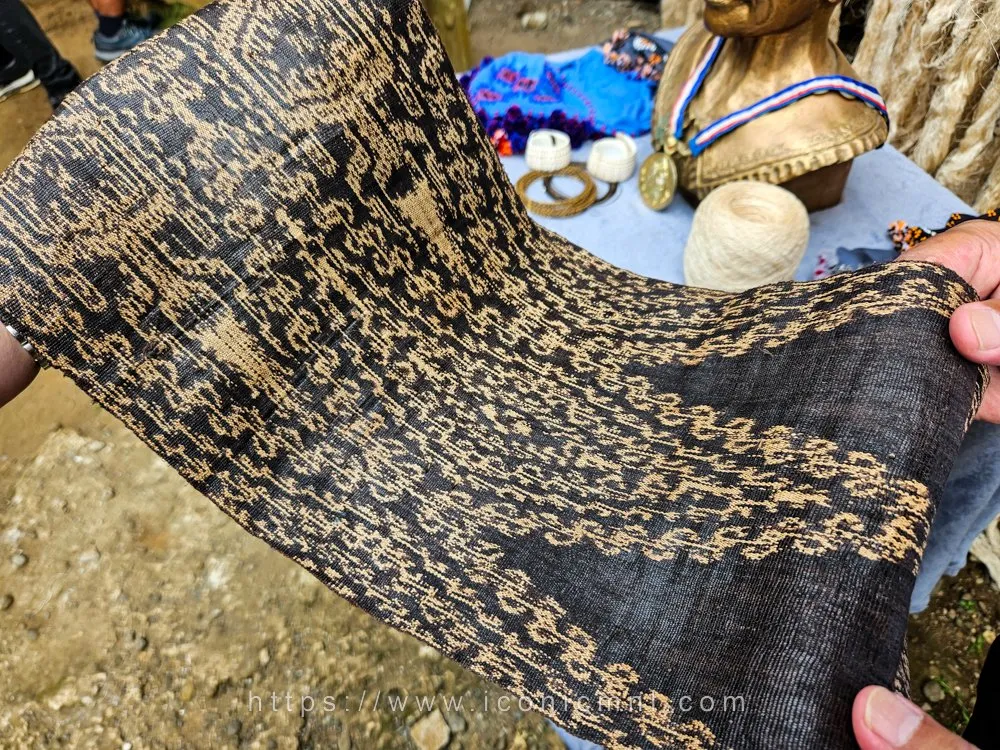
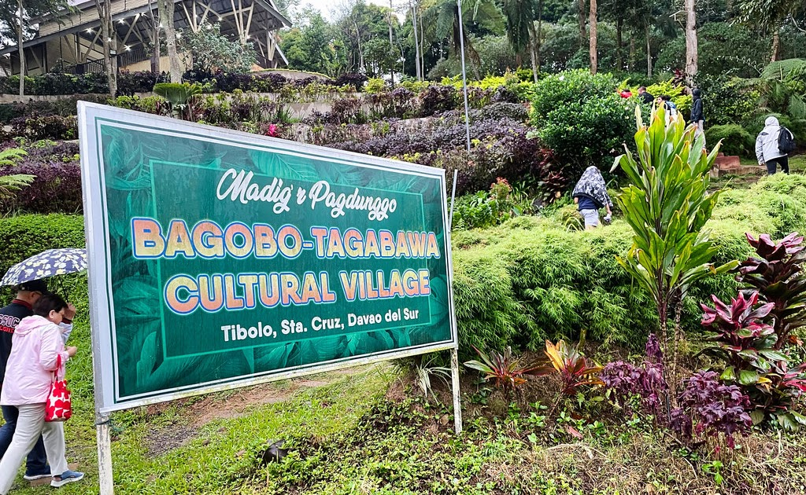
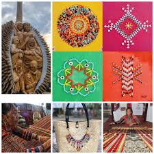

The soul of Davao del Sur lies in its indigenous peoples, primarily the Bagobo-Tagabawa and B'laan tribes. Visitors can learn about their rich heritage through immersive cultural village tours. Witness the intricate art of weaving Inabal (traditional abaca cloth), marvel at their detailed beadwork and brassware, and listen to ancestral folklore passed down through generations.
Marvel at the intricate, hand-woven Inabal fabrics created from native abaca fibers.
Feel the rhythm of traditional brass gongs (agung) and bamboo instruments.
Experience an immersive day in the life of the Bagobo-Tagabawa and B'laan communities.
The true soul of Davao del Sur lies in its indigenous peoples. Long before the modern cities were built, the Lumad tribes were the custodians of the mountains and valleys, and their rich traditions remain vibrantly alive today. Visitors have the profound opportunity to visit cultural villages nestled in the foothills of Mt. Apo. Here, you can learn the painstaking art of natural dyeing and weaving, admire their highly decorated traditional garments covered in bells and beadwork, and listen to ancestral folklore passed down through generations.

Watch elder weavers transform raw abaca fibers into stunning, naturally dyed textiles.

Take a respectful, guided tour to learn about tribal agriculture, spirituality, and daily life.

Purchase authentic, hand-made brassware and bead jewelry directly from the artisans.
Fly to Francisco Bangoy International Airport in Davao City, then take a bus south.
November to May is the dry season — ideal for outdoor activities and beach trips.
Davao del Sur offers affordable accommodations, food, and transport options.